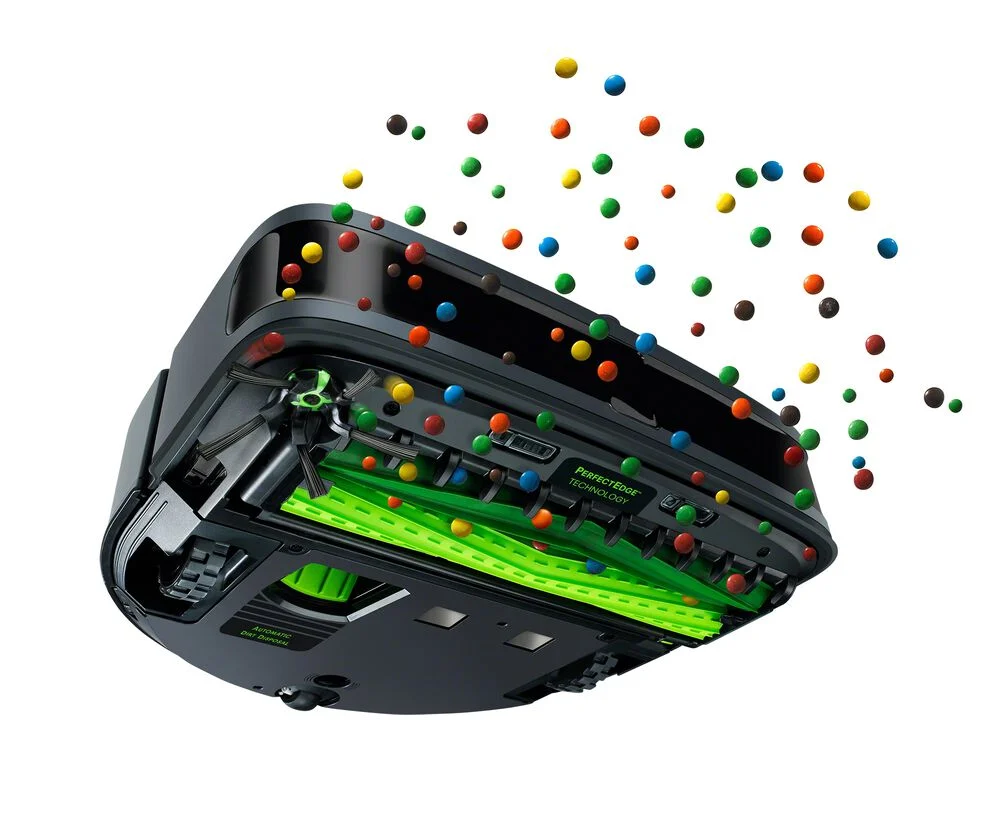
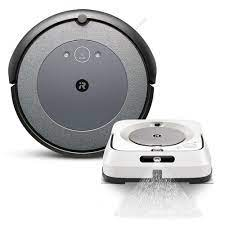

The Roomba S9+ eliminates a number of issues that have beset robot vacuums, including the ability to empty itself, collect allergens, navigate tight spaces, and offer genuinely customisable vacuuming through an app on your phone. It may be expensive, but if you value immaculately clean floors with little to no mess and work on your part, the price might be justified.

-Dimensions (12.3x12.3x3.5)inches
-Network support
-Uses iRobot App
-Phone control
-Scheduling
Supports WiFi connection
Self-emptying trash bin
Remotely controlled
Intelligent navigation
Suggests adding missing areas
Adapts with cleaning schedules
Smooth control buttons on top
Compatible with Google Assistant, Alexa and Siri
Ever since the introduction of the first Roomba robot vacuum nearly two decades ago, these devices have not only become widely available but have also stablished themselves as a household mainstay. Amazingly, they continue to advance, consistantly enhancing their features and capabilities which makes them an integral part of moderen home maintenance. The enormity of their features underscores their evolution and the ongoing commitment to providing newest technology in the realm of robotic vaccum cleaners.
Although the Roomba S9 Plus, the newest model from iRobot, functions similarly to its predecessor, it is a completely different animal and among the best robot vacuums we've tested because of its many advanced capabilities.
Most notably, it will empty itself. This means that instead of shaking out a dust box every few days, it will use the charging station to scoop the contents of the vacuum into a bag. This makes a daily task into a monthly one because the bag holds 14.9 oz (440 ml), or about 30 cleans. It's ideal for people who are time-constrained or detest emptying the dust box. For those who have allergies, there is an additional filter that traps 99 percent of dust mite, mould, and pollen allergens.
An additional feature that distinguishes the Roomba S9 Plus is its sophisticated mapping system. This isn't just a novelty; it serves a useful purpose by allowing the hoover to know where it has gone and where it still needs to clean, which cuts down on lengthy run times that still result in patches being missed. With the help of a robot equipped with vSLAM navigation technology, which collects more than 230,400 data points every second, regions are vacuumed more thoroughly and with greater control over when. Although the mapping may appear laborious at first, once it's operational, it offers cleaning flexibility and efficiency that are unmatched by budget models.
Lastly, the Roomba S9 Plus can be used with the iRobot Braava jet m6 robot mop. For busy families, huge properties to clean, and homes with several floors, the two robots can "talk" to each other and automatically hoover and then mop without any extra commands.
The Roomba S9 Plus also boasts cutting-edge technologies including a 3D sensor, bigger brushes, and a corner brush, along with a potent cleaning system.
Though, this is a pricey device, but given its capacity to clean, especially on hard floors; we believe it is well worth the investment. It is perfect for individuals who wish to delegate all vacuuming tasks to a third party. This may be the lowest priced Roomba ever, with Black Friday offers galore.
price list:
£1,499.99 (UK)
$1,099.99 (USA)
AU$2,899 (Australia)
The Roomba S9 Plus Robot Vacuum, also known as the iRobot Roomba S9 Plus in Australia, costs $1,099.99 / £1,499.99 / AU$2,899. It may be purchased right now on Amazon and the iRobot website for customers globally.
The Braava Jet M6 Robot Mop may be purchased in a bundle for $1,349.99, £1,999.99, or U$3,698. For $1,474.98 in the US, it is also available in a package that includes the iRobot H1 Handheld Vacuum and the Braava jet m6 Robot Mop.
Even though the iRobot Roomba S9 Plus is more expensive than comparable models, it is said to have the brand's deepest cleaning to date (up to 40 times the suction of earlier Roomba vacuums) and a more precise room mapping system to save time by not repeatedly cleaning the same areas.